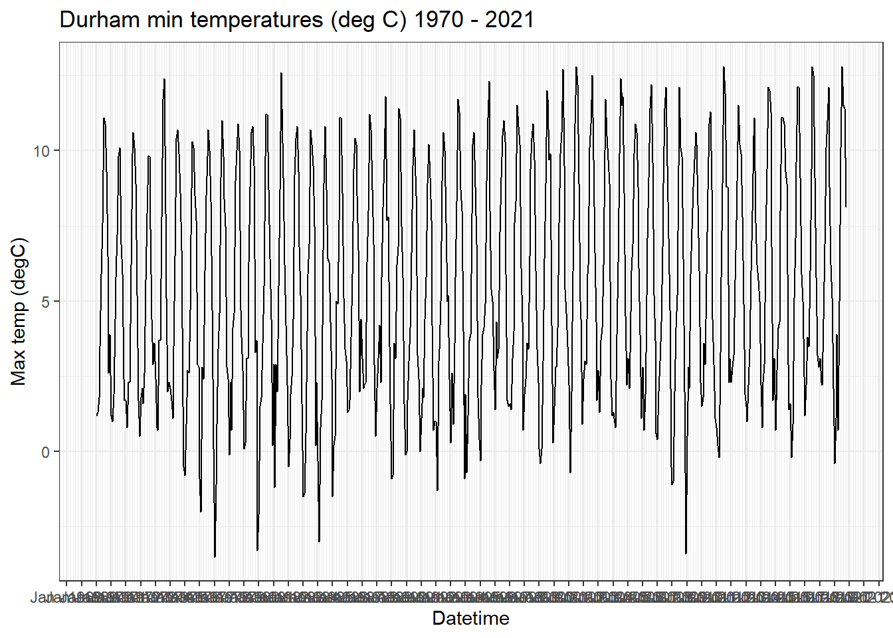
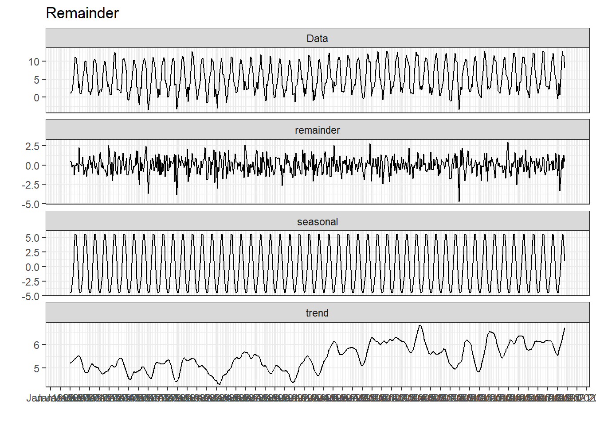
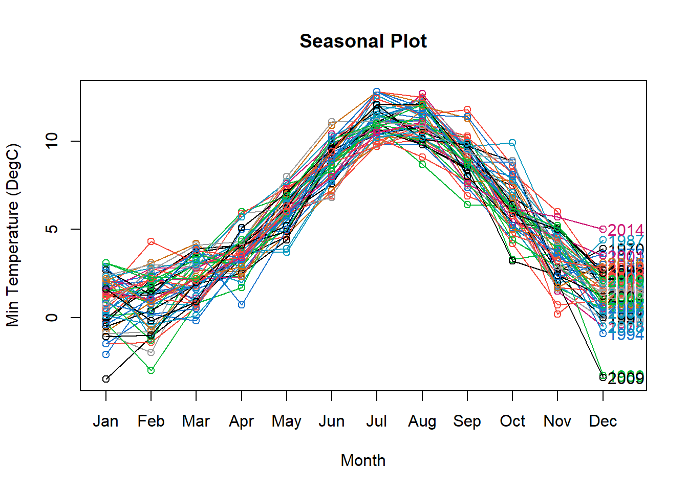
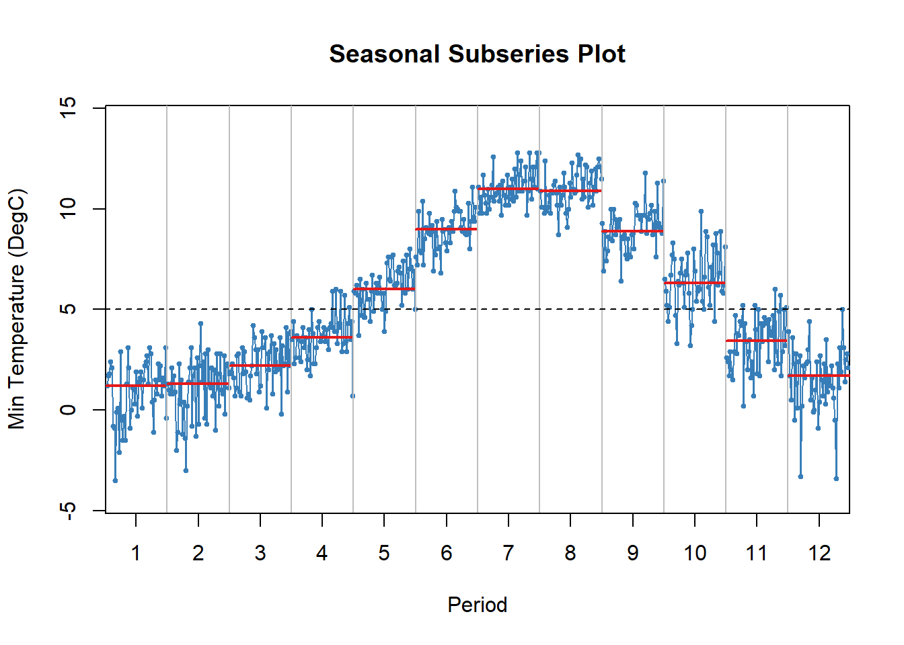
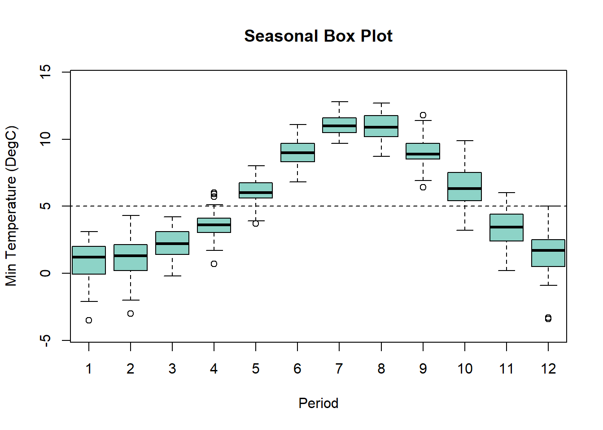
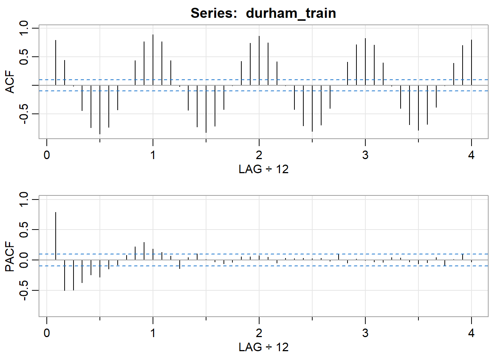
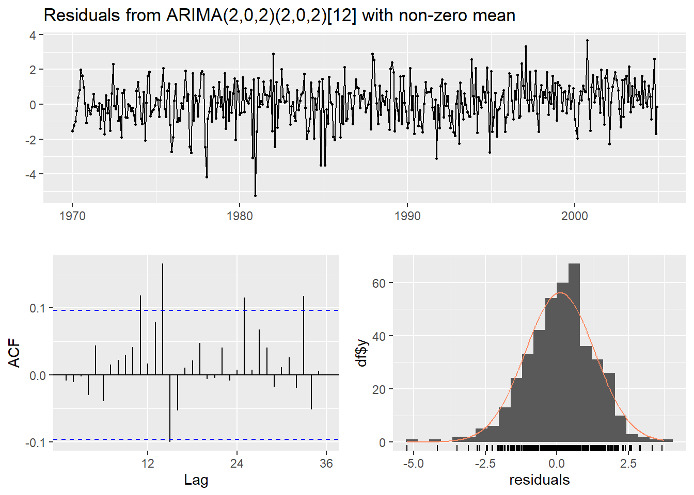
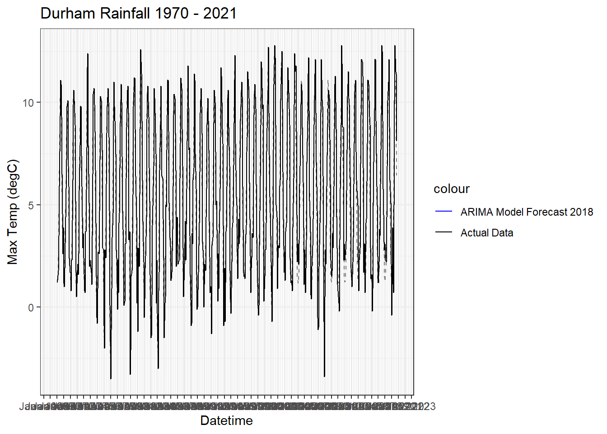

#Converting To Time Series
durham_min_temp_ts <- ts(data = durhamData$tmin.in.degC, frequency = 12, start = c(1970,1))
#Selecting Data
durham_min_temp_ts## Jan Feb Mar Apr May Jun Jul Aug Sep Oct Nov Dec
## 1970 1.2 1.3 1.8 3.5 5.9 7.6 11.1 10.9 9.3 6.5 2.6 3.9
## 1971 1.2 1.0 1.9 4.4 5.8 7.2 9.8 10.1 6.9 5.9 2.4 1.7
## 1972 1.7 0.8 2.3 2.3 6.2 9.9 10.6 10.1 8.9 5.2 1.7 0.5
## 1973 1.8 2.1 1.6 2.6 5.7 7.9 9.8 9.8 7.4 4.4 2.9 3.6
## 1974 2.4 0.8 0.7 3.7 3.7 7.8 11.7 12.4 7.9 5.1 2.0 2.3
## 1975 2.1 1.7 1.1 3.5 6.5 10.4 10.7 9.9 8.6 6.7 1.5 -0.5
## 1976 -0.8 0.9 2.7 2.6 4.7 7.2 10.3 10.1 8.5 7.7 2.9 2.8
## 1977 -0.9 -2.0 2.8 2.4 6.0 8.5 9.8 10.7 10.0 8.3 4.7 0.1
## 1978 -3.5 -1.1 0.9 3.4 4.6 9.1 11.0 9.8 8.4 7.5 2.8 2.4
## 1979 -0.1 2.3 0.7 4.1 4.6 9.0 10.0 10.9 10.0 4.7 3.8 2.7
## 1980 0.1 0.3 3.1 3.1 6.3 8.8 10.6 10.8 9.5 3.3 3.7 -3.3
## 1981 -2.1 1.5 1.8 3.6 5.5 9.8 11.2 11.2 8.7 6.4 4.4 0.2
## 1982 2.9 -1.2 2.9 2.0 5.5 8.7 12.6 11.4 9.1 6.2 4.2 2.2
## 1983 -0.5 0.4 1.9 2.5 4.4 9.2 10.4 10.8 9.3 6.8 5.2 1.6
## 1984 -1.5 -1.4 0.6 4.0 5.9 6.9 10.7 10.2 9.5 7.5 0.2 2.3
## 1985 -0.3 -3.0 0.8 1.7 6.7 8.9 10.8 8.7 6.4 6.3 4.3 2.4
## 1986 -1.5 0.2 0.5 5.0 4.9 7.7 11.1 11.1 8.6 5.1 3.4 3.0
## 1987 1.3 1.4 1.7 3.8 5.9 9.4 10.4 10.2 8.5 6.7 2.0 4.4
## 1988 3.1 2.1 2.2 2.3 6.3 8.0 11.2 10.7 8.7 6.9 2.9 0.5
## 1989 2.1 3.1 4.2 2.3 5.8 8.1 9.7 11.8 7.7 7.8 3.5 1.6
## 1990 -0.9 -0.8 3.6 3.1 6.2 6.8 11.4 11.1 7.5 5.8 1.6 -0.1
## 1991 0.0 1.7 3.0 4.1 6.6 9.5 10.7 9.8 8.5 3.2 2.4 0.0
## 1992 1.1 2.1 1.8 4.4 5.8 8.9 10.2 9.1 7.7 4.2 0.7 1.0
## 1993 1.0 -1.3 3.0 3.4 5.0 9.0 10.6 10.0 7.6 5.0 5.2 2.4
## 1994 0.3 2.6 0.9 3.6 5.8 8.3 11.7 11.3 8.7 8.0 4.0 -0.9
## 1995 1.9 -0.7 1.2 3.7 3.9 7.9 10.2 10.6 8.8 6.9 1.8 0.4
## 1996 -0.3 2.2 3.9 4.1 4.9 9.0 11.1 12.3 8.0 5.4 5.0 2.7
## 1997 1.4 4.3 3.1 3.4 7.3 9.1 10.5 11.0 10.3 5.9 1.7 1.5
## 1998 1.6 1.4 3.1 4.0 7.6 8.3 11.5 10.8 10.2 6.1 4.3 0.7
## 1999 1.9 2.4 3.6 3.4 6.5 9.4 10.4 10.9 9.7 6.0 3.4 2.3
## 2000 0.1 -0.4 0.1 3.0 6.4 8.9 12.0 11.7 9.7 9.9 4.2 0.3
## 2001 1.5 2.8 2.8 4.1 7.6 9.9 10.6 12.7 9.5 5.4 4.6 3.5
## 2002 2.2 -0.7 2.0 4.3 7.7 10.9 12.8 12.2 8.9 5.0 4.4 0.9
## 2003 2.4 3.0 2.9 5.9 6.2 10.1 10.9 12.5 9.7 6.6 4.3 1.7
## 2004 2.7 1.3 3.7 4.1 6.2 10.0 11.7 10.5 9.7 8.9 2.4 1.2
## 2005 1.3 1.1 0.8 3.9 6.3 9.9 12.4 11.5 11.8 8.6 4.5 2.2
## 2006 3.1 2.1 3.3 6.0 6.9 9.9 10.9 10.6 8.8 6.1 3.9 1.1
## 2007 2.8 0.7 1.9 3.3 7.1 9.1 11.4 12.2 9.6 5.2 3.7 0.6
## 2008 0.4 2.0 3.0 4.3 6.8 8.9 11.4 12.1 9.5 7.1 4.7 -0.5
## 2009 -1.1 -1.0 2.0 4.1 5.2 9.5 12.1 10.1 9.8 6.4 2.0 -3.4
## 2010 0.5 2.8 2.1 5.9 7.4 8.8 9.7 10.6 10.2 8.2 6.0 2.3
## 2011 1.5 1.8 3.6 2.9 5.9 8.7 10.9 11.3 8.7 4.4 2.9 1.1
## 2012 0.8 0.2 -0.2 3.3 5.8 8.9 12.8 11.9 8.8 8.8 2.3 3.1
## 2013 2.3 2.8 3.2 5.7 7.7 10.3 11.5 10.2 9.9 7.8 4.9 1.9
## 2014 1.5 1.0 2.2 3.4 6.0 8.0 10.5 11.1 7.6 6.2 5.7 5.0
## 2015 2.2 0.8 2.3 2.9 7.0 9.4 12.1 12.0 11.3 6.8 1.7 3.1
## 2016 0.7 2.7 4.1 4.3 8.0 11.1 11.1 10.9 9.3 8.9 2.9 1.4
## 2017 1.6 -0.2 0.9 5.1 7.1 9.6 12.1 12.1 9.1 5.9 5.0 2.5
## 2018 1.2 2.2 3.8 3.5 6.0 9.4 12.8 12.5 9.1 5.8 3.2 2.8
## 2019 3.1 2.3 2.2 4.4 6.9 10.1 11.0 12.1 8.8 6.2 5.1 2.1
## 2020 -0.4 1.1 3.9 0.7 5.0 10.1 12.8 11.5 11.4 8.1autoplot(durham_min_temp_ts) + ylab("Max temp (degC)") + xlab("Datetime") +
scale_x_date(date_labels = '%b - %Y', breaks = '1 year', minor_breaks = '2 month') +
theme_bw() + ggtitle("Durham min temperatures (deg C) 1970 - 2021") ## Decompostion of ts using stl()
decomp <- stl(durham_min_temp_ts, s.window = 'periodic')
#Plot decomposition
autoplot(decomp) + theme_bw() + scale_x_date(date_labels = '%b - %Y', breaks = '1 year', minor_breaks = '2 month') +
ggtitle("Remainder")
seasonplot(durham_min_temp_ts, year.labels = TRUE, col = 1:13,
main = "Seasonal Plot", ylab= "Min Temperature (DegC)")
seasplot(durham_min_temp_ts, outplot = 3, trend = FALSE,
main = "Seasonal Subseries Plot", ylab= "Min Temperature (DegC)")
## Results of statistical testing
## Presence of trend not tested.
## Evidence of seasonality: TRUE (pval: 0)seasplot(durham_min_temp_ts, outplot = 2, trend = FALSE,
main = "Seasonal Box Plot", ylab= "Min Temperature (DegC)")
## Results of statistical testing
## Presence of trend not tested.
## Evidence of seasonality: TRUE (pval: 0)#Create Train Set
durham_train <- window(durham_min_temp_ts, end = c(2004,12))
#Create Test Set
durham_test <- window(durham_min_temp_ts, start = c(2005,1))acf2(durham_train)
## [,1] [,2] [,3] [,4] [,5] [,6] [,7] [,8] [,9] [,10] [,11] [,12] [,13] [,14] [,15] [,16] [,17] [,18] [,19] [,20] [,21] [,22] [,23] [,24] [,25]
## ACF 0.79 0.44 -0.01 -0.44 -0.74 -0.85 -0.73 -0.43 0.00 0.44 0.77 0.89 0.76 0.44 -0.02 -0.44 -0.73 -0.83 -0.71 -0.42 -0.01 0.42 0.74 0.86 0.75
## PACF 0.79 -0.50 -0.50 -0.37 -0.25 -0.28 -0.14 -0.08 0.08 0.22 0.30 0.19 0.13 0.07 -0.14 0.04 0.10 0.01 -0.03 -0.06 -0.04 0.06 0.06 0.07 0.05
## [,26] [,27] [,28] [,29] [,30] [,31] [,32] [,33] [,34] [,35] [,36] [,37] [,38] [,39] [,40] [,41] [,42] [,43] [,44] [,45] [,46] [,47] [,48]
## ACF 0.42 -0.01 -0.42 -0.71 -0.81 -0.69 -0.40 0.01 0.41 0.72 0.83 0.71 0.40 -0.01 -0.41 -0.69 -0.79 -0.68 -0.39 -0.01 0.39 0.7 0.80
## PACF -0.05 0.03 0.02 0.03 0.03 0.03 -0.02 0.09 -0.05 0.02 -0.01 -0.03 -0.04 0.04 0.04 -0.03 -0.06 -0.04 0.05 -0.10 0.01 0.1 -0.03## test some fits
fit1 <- Arima(durham_train, order = c(2,0,2), seasonal = c(2,0,2))
fit2 <- Arima(durham_train, order = c(0,0,2), seasonal = c(0,0,2))
fit3 <- Arima(durham_train, order = c(2,0,2), seasonal = c(1,0,2))
fit4 <- Arima(durham_train, order = c(0,0,1), seasonal = c(1,0,2))data.frame('Model-1' = fit1$aicc,
'Model-2' = fit2$aicc,
'Model-3' = fit3$aicc,
'Model-4' = fit4$aicc,
row.names = "AICc Value")## Model.1 Model.2 Model.3 Model.4
## AICc Value 1419.064 1735.602 1417.052 1413.724checkresiduals(fit1)
##
## Ljung-Box test
##
## data: Residuals from ARIMA(2,0,2)(2,0,2)[12] with non-zero mean
## Q* = 31.718, df = 15, p-value = 0.007032
##
## Model df: 9. Total lags used: 24#Modifying Data For ggplot
model_1 <- forecast(fit1, h=190)
model_1 <- data.frame(x=as.matrix(model_1$mean))
durham_train_df <- data.frame(x=as.matrix(durham_train))
model_1_plot <- rbind(durham_train_df,model_1)
model_1_plot <- model_1_plot %>%
mutate('Date' = seq(from = as.Date("1970-01-01", '%Y-%m-%d'), to = as.Date("2020-10-31",'%Y-%m-%d'),by = 'month'))
durham_ts_df <- data.frame(x=as.matrix(durham_min_temp_ts))
durham_ts_df <- durham_ts_df %>%
mutate('Date' = seq(from = as.Date("1970-01-01", '%Y-%m-%d'), to = as.Date("2020-10-31",'%Y-%m-%d'),by = 'month'))
durham_train_df <- durham_train_df %>%
mutate('Date' = seq(from = as.Date("1970-01-01", '%Y-%m-%d'), to = as.Date("2004-12-31",'%Y-%m-%d'),by = 'month'))
colors <- c("ARIMA Model Forecast 2018" = "blue", "Actual Data" = "black")ggplot() + geom_line(model_1_plot,
mapping = aes(x=Date, y=x,
color= "ARIMA Model Forecast 2004"),lty = 2) +
geom_line(durham_ts_df,mapping = aes(x=Date, y=x,
color= "Actual Data"), lty = 1, show.legend = TRUE) +
ylab("Max Temp (degC)") + xlab("Datetime") +
scale_x_date(date_labels = '%b - %Y', breaks = '1 year',
minor_breaks = '2 month') +
theme_bw() + ggtitle("Durham Rainfall 1970 - 2021") +
scale_color_manual(values=colors)
accuracy(forecast(fit1, h=34), durham_test)## ME RMSE MAE MPE MAPE MASE ACF1 Theil's U
## Training set 0.1054833 1.213513 0.9465719 NaN Inf 0.7599397 -0.00811863 NA
## Test set 0.4847717 1.088459 0.8531627 0.6516282 25.47171 0.6849476 0.33567716 0.5108963ARIMA_Model <- Arima(durham_min_temp_ts, order = c(0,0,1), seasonal = c(1,0,2))chart_data_actual <- durhamData %>%
select(
yyyy,
mm,
tmin.in.degC
) %>%
tail(24) %>%
mutate(
month = make_date(
yyyy,
mm,
"1"
)
)
forecast <- forecast(ARIMA_Model, h=12, level = c(95, 99))
chart_data_forecast <- data.frame(
mean = as.matrix(forecast$mean),
min = as.matrix(forecast$lower),
max = as.matrix(forecast$upper),
month = seq(from = as.Date("2021-11-01", '%Y-%m-%d'), to = as.Date("2022-10-31",'%Y-%m-%d'),by = 'month')
)mock_row <- data.frame(
mean = chart_data_actual$tmin.in.degC[24],
min.95. = chart_data_actual$tmin.in.degC[24],
min.99. = chart_data_actual$tmin.in.degC[24],
max.95. = chart_data_actual$tmin.in.degC[24],
max.99. = chart_data_actual$tmin.in.degC[24],
month = as.Date("2021-10-01", '%Y-%m-%d')
)
chart_data_forecast <- chart_data_forecast %>%
bind_rows(mock_row) %>%
arrange(desc(month))highchart() %>%
hc_chart(style = list(fontFamily = "Arial")) %>%
hc_add_series(data = chart_data_forecast,
name = "99% prediction interval",
type = "arearange",
lineWidth = 0,
color = rgb(66,85,99, alpha = 50, maxColorValue = 255),
marker = list(enabled = FALSE),
dataLabels = list(enabled = FALSE),
# enableMouseTracking = FALSE,
hcaes(x = month,
high = signif(max.99.,3),
low = signif(min.99.,3))) %>%
hc_add_series(data = chart_data_forecast,
name = "95% prediction interval",
type = "arearange",
lineWidth = 0,
color = rgb(66,85,99, alpha = 90, maxColorValue = 255),
marker = list(enabled = FALSE),
dataLabels = list(enabled = FALSE),
hcaes(x = month,
high = signif(max.95.,3),
low = signif(min.95.,3))) %>%
hc_add_series(data = chart_data_forecast,
name = "Expected min temp (deg C)",
type = "line",
dashStyle = "Dash",
color = "#231f20",
marker = list(enabled = FALSE),
dataLabels = list(enabled = FALSE),
hcaes(x = month,
y = signif(mean,3))) %>%
hc_add_series(data = chart_data_actual,
name = "Min temp (deg C)",
type = "line",
lineWidth = 3,
color = "#005EB8",
marker = list(enabled = FALSE),
dataLabels = list(enabled = FALSE),
hcaes(x = month,
y = signif(tmin.in.degC,3))) %>%
hc_xAxis(type = "datetime",
dateTimeLabelFormats = list(month = "%b %y"),
title = list(text = "Month")) %>%
hc_yAxis(title = list(text = "Temperatue (deg C)")) %>%
hc_title(text = "Predicted min temp (deg C) Nov 2021 to Oct 2022",
style = list(fontSize = "16px",
fontWeight = "bold")) %>%
hc_legend(enabled = TRUE) %>%
hc_tooltip(enabled = TRUE,
shared = TRUE,
sort = TRUE) %>%
hc_credits(enabled = TRUE) %>%
hc_plotOptions(arearange = list(states = list(hover = list(enabled = FALSE))))